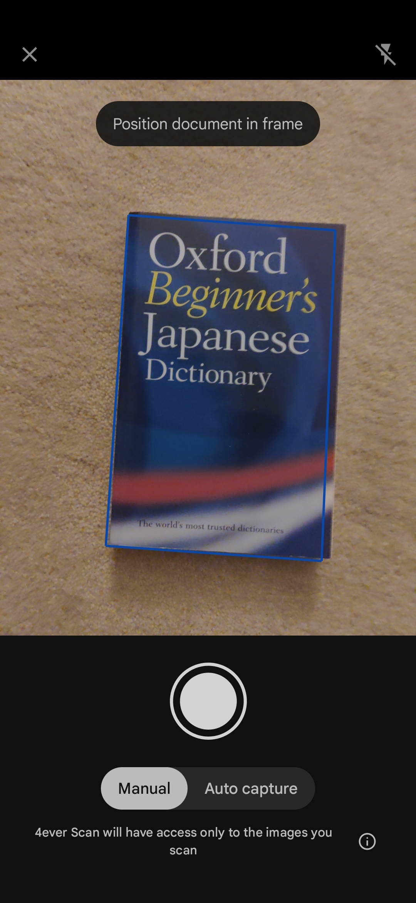
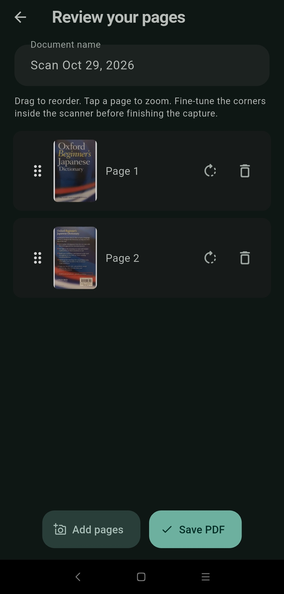
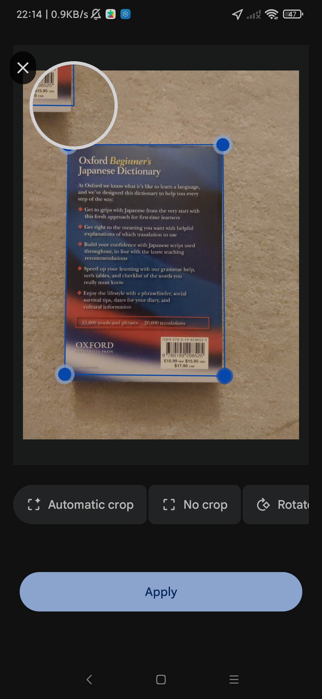

Papel, no seu lugar.
Digitalize documentos em PDF, organize-os em pastas e guarde-os consigo. Uma compra. Sem conta, sem anúncios, sem subscrições.



- Sem conta
- Sem anúncios
- Sem marca de água
- Sem subscrição
Do papel ao PDF em quatro passos
Aponte, ajuste, reveja e guarde. Cada etapa foi pensada para ser rápida e dar-lhe controlo sobre o resultado.
Aponte e digitalize
O scanner nativo do sistema deteta os contornos do documento. Capture à sua maneira, em modo manual ou automático, e acrescente as páginas que precisar.
Ajuste os quatro cantos
Arraste cada canto com a ajuda da lupa e corrija a perspetiva. Escolha o corte automático, sem corte, ou rode a página antes de aplicar.

Reveja, ordene e dê um nome
Arraste para reordenar, rode ou remova páginas, e adicione mais se faltar alguma. Dê um nome ao documento e guarde o PDF.
Guarde e encontre tudo
Os PDFs ficam na sua biblioteca, organizados em pastas e subpastas. Pesquise pelo nome e encontre o que precisa em segundos.
Capturas de ecrã da app em Android, com a interface em inglês.
Tudo o que um bom scanner precisa
Sem funcionalidades escondidas atrás de subscrições. O essencial, bem feito.
Scanner nativo
Usa o scanner do próprio sistema, o VisionKit no iOS e o Google ML Kit no Android, para detetar contornos e capturar com nitidez.
Ajuste fino dos cantos
Corrija a perspetiva arrastando os quatro cantos antes de terminar a captura.
Várias páginas, um PDF
Capture as páginas que precisar num único documento. A app não impõe um limite de páginas.
Edite antes de guardar
Reordene arrastando, rode e remova páginas, ou acrescente mais antes de guardar o PDF final.
Pastas e pesquisa
Organize os PDFs em pastas e subpastas, mova documentos entre elas e pesquise pelo nome.
Exporte e partilhe
Guarde uma cópia em Ficheiros ou na cloud que escolher, ou partilhe por e-mail e mensagens, sempre que quiser.
Claro, escuro ou automático
Temas que acompanham o sistema ou ficam fixos à sua escolha.
Português, English e Español
Interface em três idiomas, com escolha automática pelo dispositivo ou manual nas definições.
Os seus documentos ficam consigo.
O 4ever Scan foi desenhado para funcionar no seu dispositivo, sem passar por servidores nossos.
- As páginas digitalizadas e os PDFs ficam no armazenamento privado da app, no seu dispositivo.
- Sem conta, sem servidor de documentos, sem análise de utilização e sem SDK de publicidade ou rastreio.
- Os documentos não são enviados ao autor.
- A exportação e a partilha só acontecem quando você as pede.
Uma compra. Sem subscrições.
Pague uma vez na loja e use o 4ever Scan sem mensalidades, sem anúncios e sem marca de água nos seus PDFs.
A compra é feita na App Store ou no Google Play e não se transfere entre lojas. O preço e a disponibilidade serão anunciados no lançamento.
Perguntas frequentes
Preciso de internet para digitalizar?
A digitalização é feita no dispositivo. No Android, na primeira utilização pode ser necessária internet para o Google Play Services obter os componentes do scanner. Depois disso, funciona sem ligação enquanto esses componentes estiverem disponíveis.
Os documentos sincronizam entre dispositivos?
Não. Os documentos ficam no dispositivo onde foram digitalizados e reinstalar a app não os recupera. Exporte os ficheiros importantes para Ficheiros ou para a cloud que preferir.
A app faz OCR?
Não. Os PDFs são baseados em imagens e a pesquisa encontra nomes de documentos, não o texto dentro das páginas.
Que dispositivos são compatíveis?
iPhone e iPad com iOS 15 ou superior. Em Android, versão 7.0 ou superior, com o Google Play Services atualizado e pelo menos 1,7 GB de RAM.
A compra vale nas duas lojas?
Não. A compra é feita numa loja específica, App Store ou Google Play, e não se transfere para a outra.
Como posso pedir suporte?
Escreva-nos para contato@eltonalvesribeirolda.com. Descreva o problema sem anexar documentos pessoais.
Já disponível no Google Play.
Descarregue o 4ever Scan e transforme o seu telemóvel num scanner.
Descarregar no Google Play